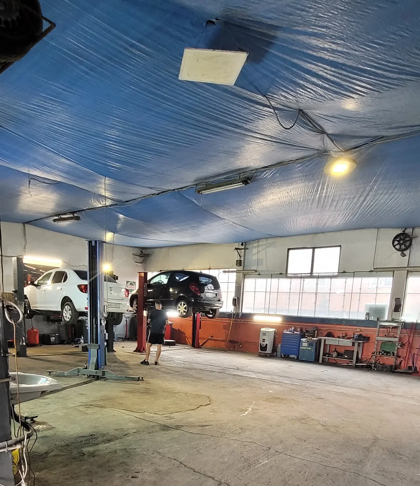
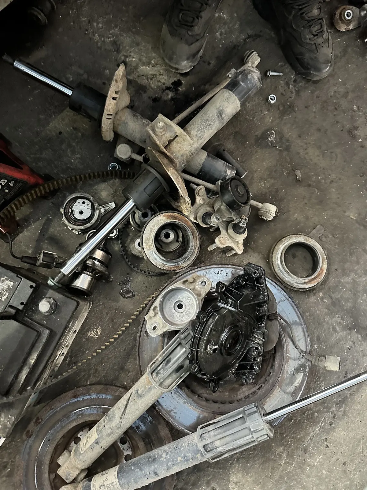
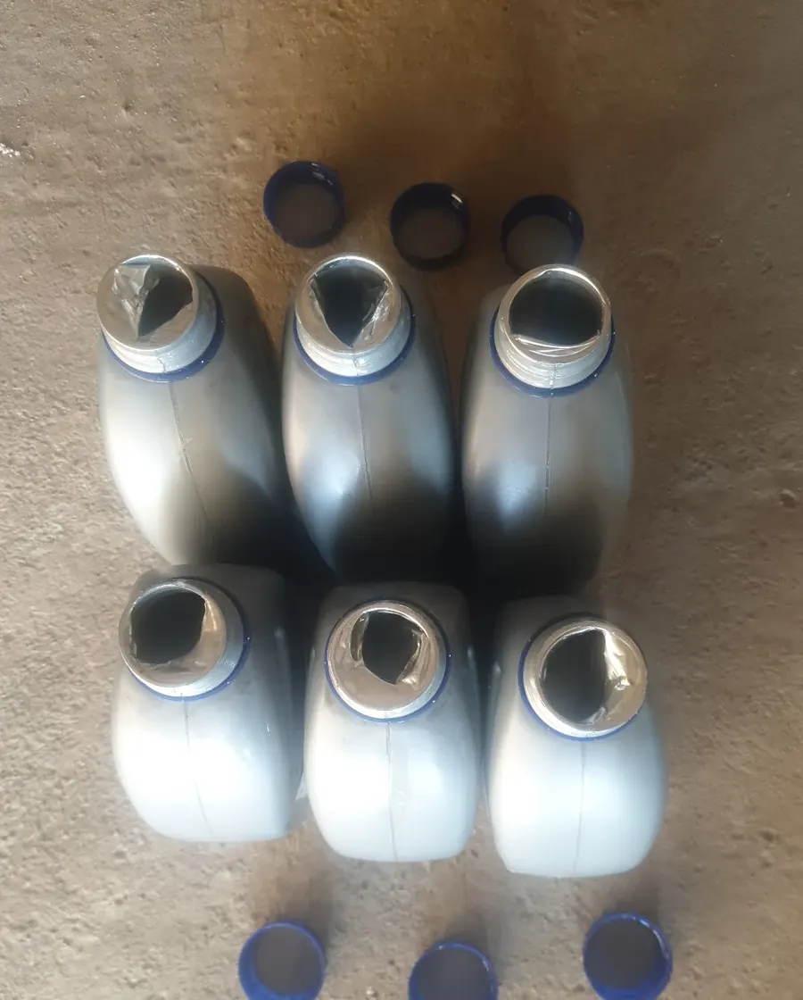
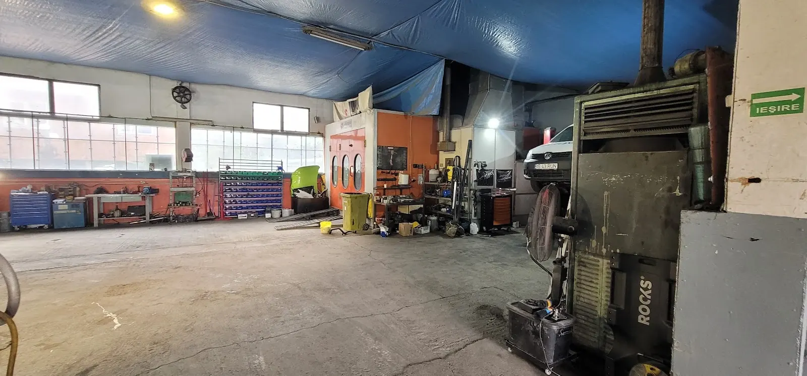
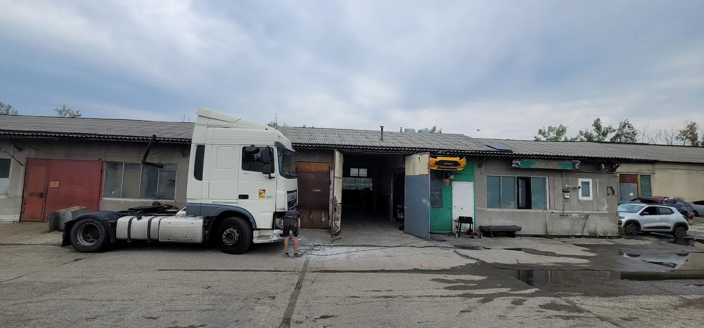
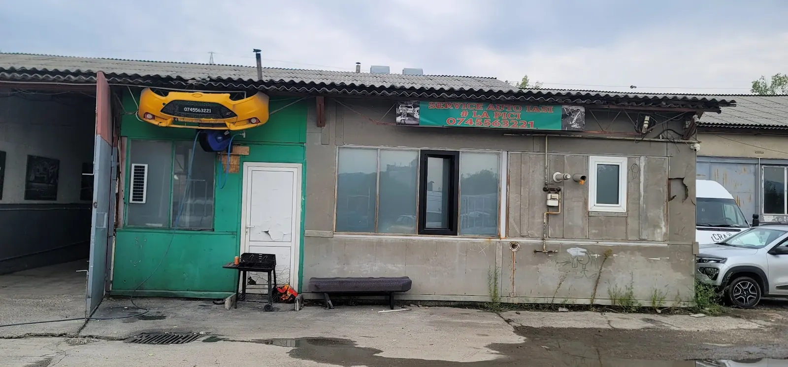
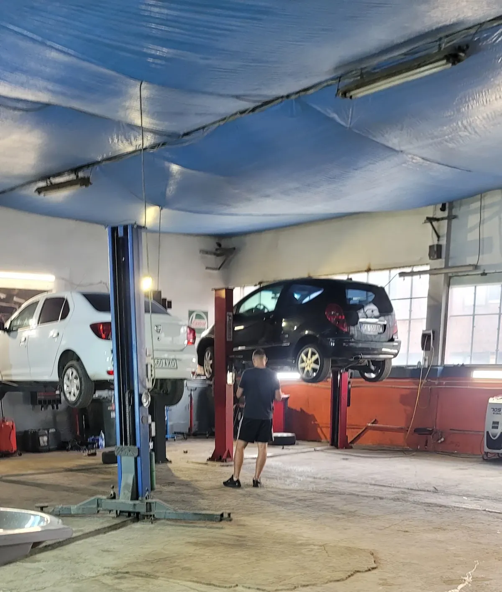
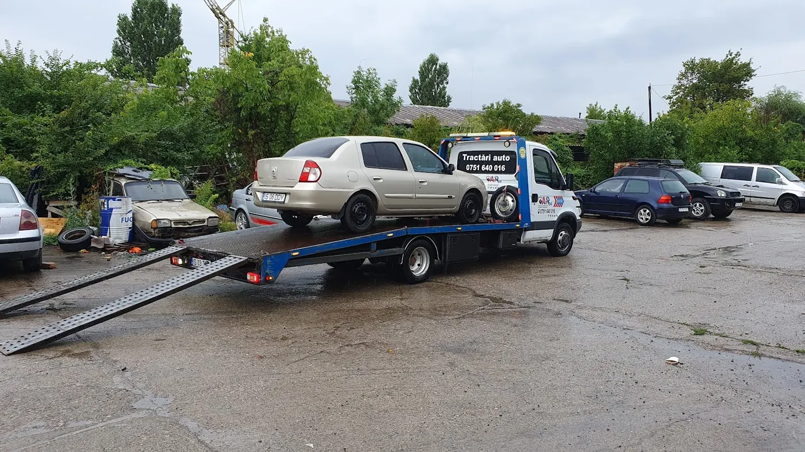

110 Nm{{Curtea AUTOTRANS · Bd. Chimiei 14|AUTOTRANS yard · Bd. Chimiei 14|Pátio da AUTOTRANS · Bd. Chimiei 14}}
{{Strângem totul|Every bolt goes|Apertamos tudo}}{{la cuplu.|to torque.|ao binário certo.}}
{{Service auto „La Pici”: mașina urcă pe elevator, noi ne uităm la ea de jos. Mecanică, frâne, suspensie, distribuție, schimb de ulei. Sună și spune-ne ce face.|“La Pici” garage: the car goes up on the lift and we look at it from underneath. Mechanics, brakes, suspension, timing belts, oil changes. Call and tell us what it’s doing.|Oficina «La Pici»: o carro sobe ao elevador e nós vemo-lo por baixo. Mecânica, travões, suspensão, distribuição, mudança de óleo. Ligue e diga-nos o que ele faz.}}
{{prezoane roată · în stea|wheel nuts · star pattern|porcas da roda · em estrela}}
1 · 3 · 5 · 2 · 4
25 Nm{{Ce se lucrează în hală|What gets done in the shop|O que se faz na oficina}}
{{Spune-ne ce face mașina. Restul e treaba noastră.|Tell us what the car is doing. The rest is our job.|Diga-nos o que o carro faz. O resto é connosco.}}

50 Nm{{Hala|The shop|A oficina}}
{{Sub prelata albastră, pe elevator.|Under the blue tarp, up on the lift.|Sob a lona azul, no elevador.}}
{{O hală mare, cu loc pentru mai multe mașini deodată. Mașina se ridică pe elevator cu două coloane, iar problema se caută acolo unde este: dedesubt.|A big hall with room for several cars at once. The car goes up on a two-post lift and the problem gets looked for where it is: underneath.|Uma oficina grande, com lugar para vários carros ao mesmo tempo. O carro sobe a um elevador de duas colunas e o problema procura-se onde está: por baixo.}}
- {{elevatoare|lifts|elevadores}}{{cu două coloane, pentru autoturisme|two-post, for passenger cars|de duas colunas, para ligeiros}}
- {{cabină|booth|cabine}}{{o cabină de vopsire în hală · lucrări de vopsitorie: de confirmat|a paint booth in the hall · paint jobs: to be confirmed|uma cabine de pintura na oficina · trabalhos de pintura: a confirmar}}
- {{acces|access|acesso}}{{intrare accesibilă pentru scaun cu rotile|wheelchair-accessible entrance|entrada acessível a cadeira de rodas}}
90 Nm{{O zi în hală|A day in the shop|Um dia na oficina}}
{{Ce iese de sub mașină se vede pe jos.|What comes off the car ends up on the floor.|O que sai do carro fica no chão.}}



{{Amortizoare, un kit de distribuție, un disc de frână: piese care au ieșit dintr-o singură mașină. Fiecare șurub care intră la loc are un cuplu de strângere, iar cheia dinamometrică face clic când l-a atins.|Struts, a timing belt kit, a brake disc: parts that came out of a single car. Every bolt that goes back in has a tightening torque, and the torque wrench clicks when it gets there.|Amortecedores, um kit de distribuição, um disco de travão: peças que saíram de um só carro. Cada parafuso que volta ao lugar tem um binário de aperto, e a chave dinamométrica faz clique quando lá chega.}}
{{Tabelul de cupluri|The torque table|A tabela de binários}}30 Nm{{Cum ne găsești|How to find us|Como nos encontrar}}
{{Caută bara galbenă de pe peretele verde.|Look for the yellow bumper on the green wall.|Procure o para-choques amarelo na parede verde.}}
- {{Bulevardul Chimiei 14|Bulevardul Chimiei 14|Bulevardul Chimiei 14}}{{Intri în curtea AUTOTRANS SA, spre zona industrială.|Drive into the AUTOTRANS SA yard, towards the industrial area.|Entre no pátio da AUTOTRANS SA, para a zona industrial.}}
- {{Șirul de hale|The row of halls|A fila de pavilhões}}{{Mergi de-a lungul halelor cu acoperiș ondulat.|Follow the row of halls with corrugated roofs.|Siga a fila de pavilhões com telhado ondulado.}}
- {{Bara galbenă cu numărul|The yellow bumper with the number|O para-choques amarelo com o número}}{{Pe peretele verde stă o bară de mașină galbenă cu 0745 563 221 și firma „Service Auto Iași · La Pici”. Ai ajuns.|On the green wall hangs a yellow car bumper with 0745 563 221 and the sign “Service Auto Iași · La Pici”. You’re here.|Na parede verde está um para-choques amarelo com 0745 563 221 e a placa «Service Auto Iași · La Pici». Chegou.}}


120 Nm{{Program|Hours|Horário}}
{{Sună înainte. Îți spunem când să vii.|Call first. We’ll tell you when to come.|Ligue antes. Dizemos-lhe quando vir.}}
{{Miercurea lucrăm de la 08:00 la 19:00. Pentru celelalte zile, sună: programul complet urmează să fie confirmat.|On Wednesdays we work 8:00 to 19:00. For the other days, call: the full timetable is still to be confirmed.|À quarta-feira trabalhamos das 08:00 às 19:00. Para os outros dias, ligue: o horário completo está por confirmar.}}
25 Nm{{Servicii|Services|Serviços}}
{{Ce se repară la Pici.|What gets fixed at La Pici.|O que se repara no La Pici.}}
{{Ce se vede în hală: elevatoare, piese de suspensie și distribuție, discuri de frână, ulei. Prețul îl afli la telefon, după ce ne spui mașina și problema.|What you can see in the shop: lifts, suspension and timing parts, brake discs, oil. You get the price on the phone, once you tell us the car and the problem.|O que se vê na oficina: elevadores, peças de suspensão e distribuição, discos de travão, óleo. O preço sabe-o ao telefone, depois de dizer o carro e o problema.}}
Nm{{De ce cheia dinamometrică|Why the torque wrench|Porquê a chave dinamométrica}}
{{Fiecare șurub are cuplul lui.|Every bolt has its own torque.|Cada parafuso tem o seu binário.}}
{{Prea slab și se desface. Prea tare și rupi filetul sau deformezi discul. De-asta se strânge cu cheia dinamometrică, nu „din mână”.|Too loose and it works its way out. Too tight and you strip the thread or warp the disc. That’s why it gets done with a torque wrench, not by feel.|Pouco apertado e solta-se. Apertado demais e estraga a rosca ou empena o disco. Por isso aperta-se com chave dinamométrica, não «a olho».}}
{{Valori tipice pentru un autoturism. Cuplul exact îl dă fișa tehnică a fiecărei mașini.|Typical values for a passenger car. The exact torque is in each car’s technical data.|Valores típicos para um ligeiro. O binário exato está na ficha técnica de cada carro.}}
0 Nm{{Cerere de programare|Booking request|Pedido de marcação}}
{{Mașina, problema, când poți.|The car, the problem, when you can.|O carro, o problema, quando pode.}}
{{Completezi trei rânduri, iar eticheta pentru cheile tale se scrie singură. O trimiți pe WhatsApp sau prin SMS și te sunăm înapoi cu ziua.|Fill in three lines and the tag for your keys writes itself. Send it on WhatsApp or by SMS and we call you back with the day.|Preenche três linhas e a etiqueta das suas chaves escreve-se sozinha. Envie-a por WhatsApp ou SMS e ligamos de volta com o dia.}}
{{Ora exactă și prețul le stabilim la telefon, după ce știm mașina și problema.|We settle the exact time and the price on the phone, once we know the car and the problem.|A hora exata e o preço combinam-se ao telefone, depois de sabermos o carro e o problema.}}
50 Nm{{Hala|The shop|A oficina}}
{{Hala de sub prelata albastră.|The hall under the blue tarp.|O pavilhão sob a lona azul.}}
{{O hală în curtea AUTOTRANS, cu prelată albastră sub acoperiș, elevatoare, cabină de vopsire și loc de parcare în curte.|A hall in the AUTOTRANS yard, with a blue tarp under the roof, lifts, a paint booth and parking in the yard.|Um pavilhão no pátio da AUTOTRANS, com lona azul sob o telhado, elevadores, cabine de pintura e estacionamento no pátio.}}
{{Fotografii din service|Photos from the garage|Fotografias da oficina}}



{{Pe scurt|In short|Em resumo}}
{{Ce știm sigur, ce urmează să aflăm.|What we know, what’s still to come.|O que sabemos, o que falta saber.}}
- 4,6{{nota pe Google|rating on Google|nota no Google}}
- {{adresă|address|morada}}{{AUTOTRANS SA, Bulevardul Chimiei 14, 707252 Iași|AUTOTRANS SA, Bulevardul Chimiei 14, 707252 Iași|AUTOTRANS SA, Bulevardul Chimiei 14, 707252 Iași}}
- {{acces|access|acesso}}{{intrare accesibilă pentru scaun cu rotile|wheelchair-accessible entrance|entrada acessível a cadeira de rodas}}
- {{meșterii|the team|a equipa}}{{numele și anii de meserie: de confirmat|names and years in the trade: to be confirmed|nomes e anos de ofício: a confirmar}}
- {{plată|payment|pagamento}}{{numerar, card: de confirmat|cash, card: to be confirmed|numerário, cartão: a confirmar}}
30 Nm{{Contact și program|Contact and hours|Contactos e horário}}
{{Bulevardul Chimiei 14, curtea AUTOTRANS.|Bulevardul Chimiei 14, AUTOTRANS yard.|Bulevardul Chimiei 14, pátio da AUTOTRANS.}}
{{Service auto „La Pici”|“La Pici” garage|Oficina «La Pici»}}
AUTOTRANS SA, Bulevardul Chimiei 14, 707252 Iași
{{Deschide în Google Maps|Open in Google Maps|Abrir no Google Maps}}
{{Cod Plus: 4JXM+PG Iași. Intrarea e prin curtea AUTOTRANS SA.|Plus Code: 4JXM+PG Iași. The entrance is through the AUTOTRANS SA yard.|Plus Code: 4JXM+PG Iași. A entrada é pelo pátio da AUTOTRANS SA.}}